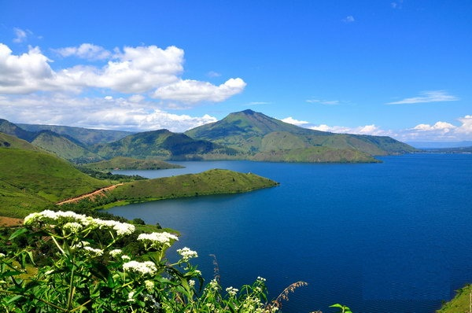

================================================================================================================================
Wisata Alam
Gunung Bromo
Raja Ampat Papua

Danau Toba
| Tanggal | keterangan Peringatan |
|---|---|
| 21 Februari | Hari Peduli Sampah Nasional |
| 21 Maret | Hari Hutan Sedunia |
| 22 Maret | Hari Air Sedunia |
| 22 April | Hari Bumi |
| 5 juni | Hari Lingkungan Hidup Sedunia |
| 21 November | Hari Gunung Sedunia |
====================================================================================================================================
TERIMAKASIH